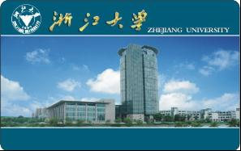
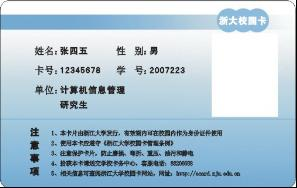
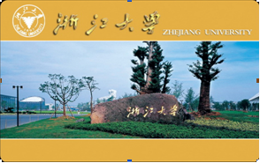
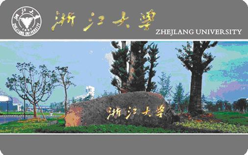

校内身份证件功能：学生证、工作证、退休证。
校内电子证件功能：借书证、住宿证、上机卡、门禁卡、签到卡、考勤卡等。
校内消费功能：就餐、购物、上机、上网、水控、乘车、罚款、拍照、复印、打印、报销、网上交易等。基本上，校园卡就是你在学校里面的身份证与通行证。
目前校园卡内集成了两种帐户信息：
卡帐户，相当于校内电子钱包：用于就餐、购物、洗澡、乘车、自助缴费、自助转账等，需在自助终端或读卡器上刷卡使用。
电子账户：实现网上银行转账、网上缴网络费、网上缴考试报名费，网上交易支付等无卡交易。
根据校园人员类型及服务要求把校园卡分为正式卡、消费卡、功能卡、临时卡四类。
 
发放范围：人事处备案的在编教职工；在册的国家计划内招收的全日制学生。
发放原则：一人一卡，申领首张正式卡免收工本费。
发放流程：教职工在办理报到（或退休）手续后凭校人事处出具的报到通知单到紫金港校园卡服务部办理。学生正式卡由学校统一组织发放（本科生随通知书寄发；研究生开学报到后在学院领取；本硕博连读生取得新学号后由学院统一申请换卡）。

发行范围：参加继续教育、短期进修等国家计划外在校学习的非全日制各类学生及进修人员；各部门自招人员等在校园内的为师生提供服务的人员。
发放原则：一人一卡，办卡收取卡工本费。有效期：合同期
发放流程：由院处级（用人/办学）单位统一递交办卡申请表至校园卡服务部。申请办理功能卡的人员须已在“浙江大学统一身份认证系统”中注册并审核通过。

发行范围：校外人员。
办卡原则：一人一卡，办卡收取工本费。有效期：一年。
发放办法：携带本人身份证到校园卡服务部办理。
发行范围：所有人员。
发放原则：收取工本费押金。遗失卡片无法挂失、补卡。有效期3个月。
发放流程：到校园卡服务部、各食堂充值点现场办理。